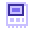
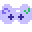

Game Boy Advance
.gba
mGBA, compiled to WebAssembly, running inside VS Code. Battery saves, save states, screenshots and turbo.
VS Code extension · free and open source
RetroVerse runs Game Boy Advance, Nintendo DS and Nintendo Switch games in a section of the Explorer, below your files. Code in the editor, play in the sidebar.

.gba, .nds or Switch file from the Explorer.Features

Click a game file and it starts in a RetroVerse section at the bottom of the Explorer instead of an editor tab. Drag the divider to give the game more room, or collapse the section and the game keeps running.
You can move the section to the secondary side bar or the bottom panel, and VS Code remembers where you put it.
The keys follow desktop GBA emulators such as mGBA and VisualBoyAdvance, and a key means the same button on every system. Arrow keys move, X and Z are A and B, Enter is Start and Backspace is Select.
Hold Tab for turbo. Standard gamepads work without setup.

Eden windowFor Switch, RetroVerse starts Eden, which you install yourself, and streams its window into VS Code. A small capture agent sends the picture and sound over a local connection that only the current session can use, and your input goes back to Eden.
RetroVerse reads Eden's own key bindings, so changes you make in Eden carry over.
Systems

.gba
mGBA, compiled to WebAssembly, running inside VS Code. Battery saves, save states, screenshots and turbo.
.nds
melonDS, compiled to WebAssembly. Both screens in the player, with the mouse as the stylus.
.nsp .xci .nro
A separately installed Eden, streamed into VS Code on macOS with Apple Silicon.
RetroVerse does not include or download any games, BIOS files, firmware or keys. Use homebrew or games you own.
Install
Get retroverse.vsix from the latest release.
From a terminal:
code --install-extension retroverse.vsixOr open the Extensions view, click the ... menu and choose Install from VSIX...
Click a game file in the Explorer, or right-click it and choose Play in RetroVerse.
Every release is built by GitHub Actions and comes with build provenance and a SHA256SUMS file.
With the GitHub CLI:
gh attestation verify retroverse.vsix --repo avishayil/retro-verseControls
| Button | Key | GBA | DS | Switch |
|---|---|---|---|---|
| Movement | ← ↑ ↓ → | D-pad | D-pad | Left stick |
| D-pad on Switch | I J K L | yes | ||
| A / B | X / Z | yes | yes | yes |
| L / R | A / S | yes | yes | yes |
| Y / X | C / V | yes | yes | |
| ZL / ZR | Q / W | yes | ||
| Start (+) | Enter | yes | yes | yes |
| Select (-) | Backspace or Right Shift | yes | yes | yes |
| Home | H | yes | ||
| Turbo | Hold Tab, or Shift + Tab to toggle | yes | yes | yes |
| Quick save / load | F5 / F8 | yes | yes |
To change a key, set retroverse.input.keyboard, for example { "A": "KeyK" }. The
Keys button in the player toolbar shows the current layout.
Switch
RetroVerse does not include a Switch emulator. Install Eden first; RetroVerse finds
eden-cli on your PATH or Eden.app in /Applications or
~/Applications, or you can set retroverse.switch.edenPath.
FAQ
GBA and DS saves and save states live in VS Code's extension storage, keyed by a hash of the game file, so
renaming or moving a game keeps its progress. RetroVerse: Open Saves Folder shows where they are,
and retroverse.storage.savesDirectory moves them. Switch saves stay in Eden.
Yes, for GBA and DS over adb. Right-click a game file and choose Sync Save with Android, then pick the app that plays it on the phone: RetroArch, melonDS or any save path. RetroVerse copies whichever side changed since the last sync, asks when both did, and backs up the save it replaces.
Open the ... menu at the top of the Explorer and turn on RetroVerse, or right-click its header
and choose Reset Location.
Check the RetroVerse output channel. A message about the GDB stub port usually means another copy of Eden is still running.
Another window probably covers Eden's window. Uncover it and the stream continues.
Games run in VS Code's sandboxed webview, which can load only the extension's own files. Settings that pick programs or folders are ignored in workspace settings, and the Switch capture agent accepts only the current session. The security model describes every control.
Run RetroVerse: Show Diagnostics and include its output when you open an issue. Never attach game files.
Free and open source. Bring homebrew or games you own.
git clone https://github.com/avishayil/retro-verse.git
cd retro-verse
npm install
npm run build # emulator cores and the extension bundle
npm run build:native # macOS only: the eden-bridge capture agent
npm testPress F5 in VS Code to start a development window. The contributing guide explains the tests and the project layout.